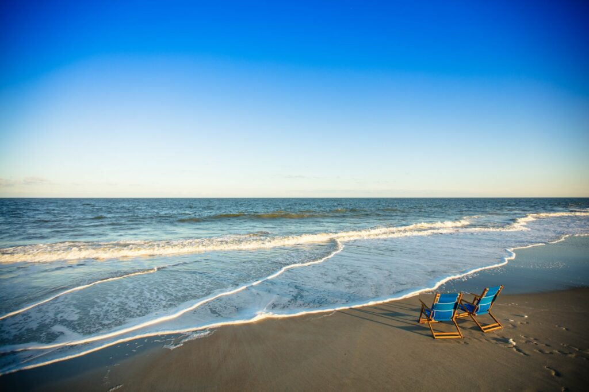
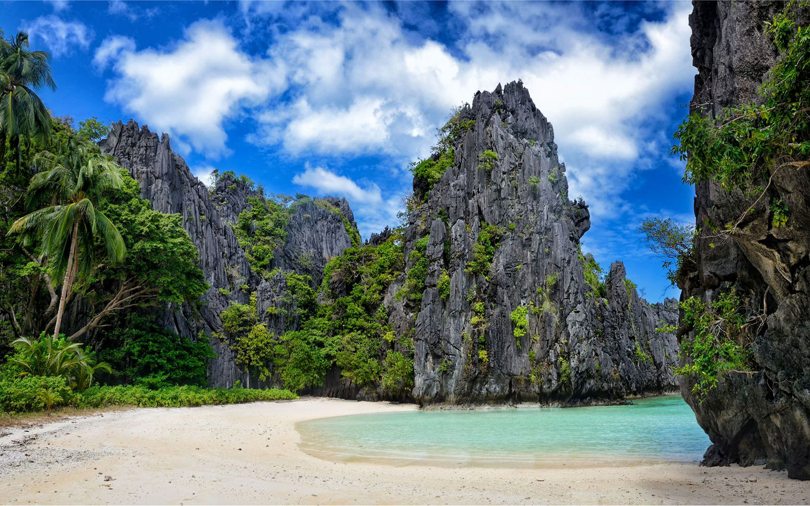
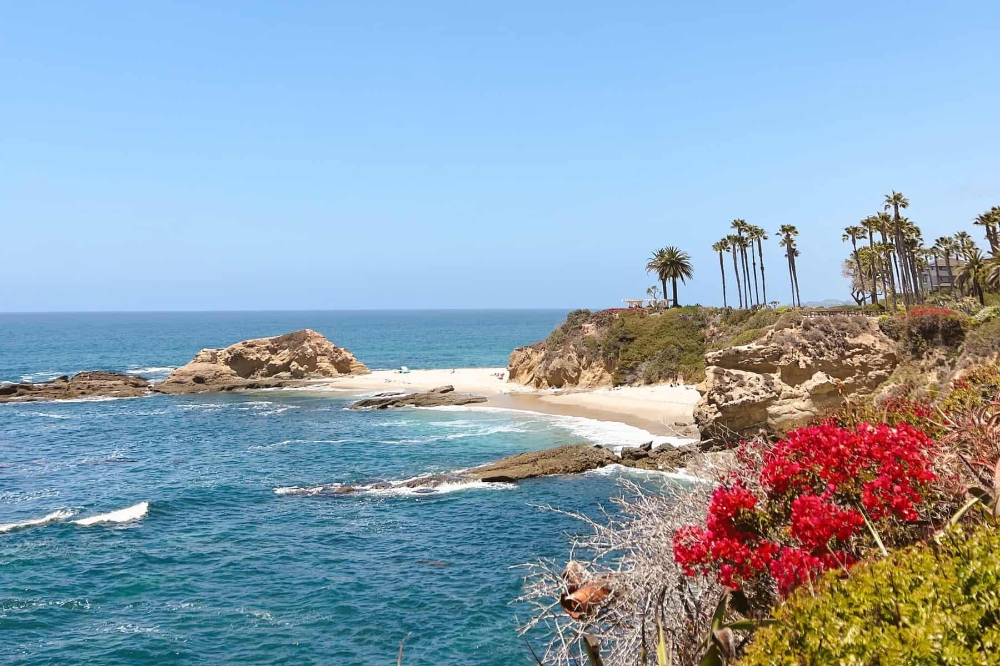

Beaches are often considered beautiful because of their natural features, such as the soothing sound of the waves, the feel of the sand, the vast expanse of the ocean, and the stunning sunsets or sunrises. The combination of these elements often creates a sense of tranquility and relaxation for many people.
8 Reasons the Beach is the Best Choice for Your Vacation 8 reasons to choose the beach for your next vacation:
:max_bytes(150000):strip_icc()/saud-beach-luzon-philippines-WRLDBEACH0421-15e2c368e7ad4495be803bd60cafa379.jpg)
Juist is known as the "longest sandbank in the world". The fine sandy beach is 17 kilometers longof fine sandy beach invite you to take long walks directly by the sea. Spend a day on the beach of Juist, you can also rent a beach chair here and of course swim in the North Sea. Children can play and build sandcastles here.because the North Sea island is great for kite surfing, sailing and windsurfing. Those who like it quieter are guaranteed to find beautiful, secluded spots with a view of the unspoiled nature on the kilometer-long beach.

If you are looking for relaxing, the North Sea Heilbad Bensersiel is the right place for you. The white beach and the sound of the water provide you with guaranteed relaxation. The North Sea spa is a real dream for families: while the grown-ups can switch off in the beach chair, the little ones can have a good romp in a playground and two indoor play halls. There is also no lack of sporting activities here. Water sports and activities such as beach volleyball or soccer are offered to the beach guests in many ways.

The "Family Lagoon Perlebucht" was extensively modernized by the city of Büsum and is now one of the most family-friendly beaches on Schleswig-Holstein's North Sea coast. Among other things, a pier, an impressive pier square and a beautiful promenade with benches were built. Of special interest to those seeking a relaxing time with children is the family area, which offers a wide range of playground equipment. A highlight for smaller children is exploring the "Büsumer Krabbe". Playing on the approx. 250 m² climbing landscape will ensure that they never get bored. There is also plenty of water fun: during the summer months, floating bathing islands are anchored in the southern bathing pool. The islands are equipped with many play elements such as slides and jumping towers and provide fun for young and old. Ten barbecue areas, sixteen picnic seating groups and a large campfire circle with numerous benches invite you to end the evening with a cozy dinner.

The breathtakingly beautiful North Sea beach Norddeich, which belongs to the city of Norden, covers eight whole hectares. Plenty of space for building sandcastles, extended beach walks or wonderfully relaxed sunbathing. Between the gently rolling dunes you can find beach chairs, numerous playground equipment for the little ones and a spacious beach volleyball court. In the high season, children's entertainment is also offered, allowing the grown-ups a little break from being parents. Dogs are very welcome here, so the four-legged friends also have a good time. The two-hectare dog beach is not far from the main beach.

Hilton Head Island, often referred to as simply Hilton Head, is a Lowcountry resort town and barrier island in Beaufort County, South Carolina, United States.It is 20 miles (32 km) northeast of Savannah, Georgia, and 95 miles (153 km) southwest of Charleston.Hilton Head Island is the largest city within the Hilton Head Island-Bluffton-Port Royal,The Harbour Town Lighthouse and Museum marks the southwest tip. The Coastal Discovery Museum features heritage buildings, trees and themed gardens.

Myrtle Beach is a resort city on the east coast of the United States in Horry County, South Carolina. It is located in the center of a long and continuous 60-mile (97 km) stretch of beach known as the "Grand Strand” in the northeastern part of the state. Its year-round population was 35,682 as of the 2020 census, making it the 13th-most populous city in South Carolina. Myrtle Beach is one of the major centers of tourism in South Carolina and the United States. The city's warm subtropical climate, miles of beaches, 86 golf courses, and 1,800 restaurants attract over 20 million visitors each year, making Myrtle Beach one of the most visited destinations in the country.

Stuart Beach is located across from the Elliott Museum and the Florida Oceanographic Coastal Center. The park offers a variety of amenities including covered picnic areas, beach volleyball courts, basketball courts, showers, restrooms and more.

Tybee Island is a city and a barrier island in Chatham County, Georgia, 18 miles (29 km) east of Savannah. The name "Tybee Island" is used for both the island and the city, but geographically they are not identical: only part of the island's territory lies within the city. Tybee Island Lighthouse.
Hammonasset Beach State Park is a public recreation area occupying two miles of beach front on Long Island Sound in the town of Madison, Connecticut. It is the state's largest shoreline park and one of the most popular attractions in the state, drawing an estimated one million visitors annually. The state park offers beach activities, large campground, and nature center. It is managed by the Connecticut Department of Energy and Environmental Protection.

Cape Henlopen's beaches attract thousands of visitors who enjoy everything from ocean swimming, boating, fishing, and kayaking to clamming, paddle-boarding and wind-surfing. But Cape Henlopen offers more than just the ocean and bays. The park's premiere trails offer hiking and biking exploration.

The Canaveral National Seashore (CANA) is a National Seashore located between New Smyrna Beach and Titusville, Florida, in Volusia and Brevard Counties. The park, located on a barrier island, was created on January 3, 1975

El Nido is a Philippine municipality on Palawan island. It’s known for white-sand beaches, coral reefs and as the gateway to the Bacuit archipelago, a group of islands with steep karst cliffs. Miniloc Island is famed for the clear waters of its Small and Big lagoons. Nearby Shimizu Island has fish-filled waters. The area has many dive sites, including Dilumacad Island’s long tunnel leading to an underwater cavern.
The white sand beaches of Turquoise Bay give way to the crystal clear waters of the Ningaloo Reef Lagoon which are brimming with pristine coral gardens just footsteps from the beach. This makes Turquoise Bay one of the Ningaloo region's premier land-based snorkelling sites.

Zuma Beach is a county beach at 30000 Pacific Coast Highway in Malibu, California. One of the largest and most popular beaches in Los Angeles County, California, it is known for its long, wide sands and excellent surf. It consistently ranks among the healthiest beaches for clean water conditions in Los Angeles County.

Features pristine sand and calm waters set within Two People's Bay Nature Reserve Little Beach is the most picturesque perfect, magical beach in Western Australia. With a combination of white sand, azure water, granite headlands, and greenery, it easily surpasses some famous beaches worldwide.Little Beach Albany, Western Australia, is part of Two Peoples Bay Nature Reserve. We enjoy visiting this hidden beach due to its turquoise water, soft white sand, and beautiful granite rocks.

Laguna Beach is a small coastal city in Orange County, California. It’s known for its many art galleries, coves and beaches. Main Beach features tide pools and a boardwalk leading to the paths and gardens of nearby Heisler Park. Aliso Beach Park is a popular surf spot. The waters off Crystal Cove State Park are designated as an underwater park. Trails meander through coastal canyons in Laguna Coast Wilderness Park
